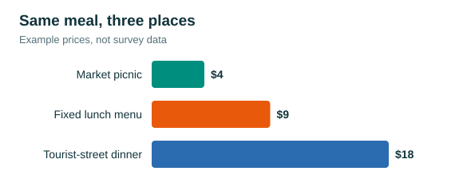

Eat well on ten dollars a day
Eat your biggest meal at lunch. Many restaurants run a fixed lunch menu that costs far less than the same food at dinner.
Shop at markets
Local markets sell fruit, bread and cheese for a fraction of what tourist-street cafes charge.
Use the hostel kitchen
One pot of pasta or rice can cover two meals.
